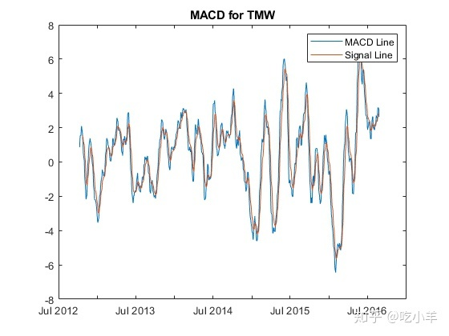

Home
此示例显示如何使用时间表从模拟的每日股票数据中可视化和计算每周统计信息。
步骤1.加载数据。
此示例的数据在MAT文件中SimulatedStock.mat，该文件加载以下内容：
- 与收盘价相对应的日期，
TMW_DATES - 开盘价
TMW_OPEN - 股票价格的日高
TMW_HIGH - 股票价格的日低
TMW_LOW - 收盘价，
TMW_CLOSE, TMW_CLOSE_MISSING - 每日交易量
TMW_VOLUME - 表格中的数据
TMW_TB
load SimulatedStock.mat TMW_*步骤2.创建时间表。
在时间表中，您可以使用财务时间序列而不是向量。使用timetable时，您可以轻松地跟踪日期。您可以根据日期来操作数据序列，因为timetable对象会跟踪时间序列的管理。
使用MATLAB? timetable函数创建一个timetable对象。另外，您可以使用MATLAB转换功能table2timetable将表转换为时间表。在此示例中，时间表TMW_TT是根据表格构建的，仅用于说明目的。创建timetable对象后，可以使用timetable对象的Description字段存储有关时间表的元信息。
% Create a timetable from vector input
TMW = timetable(TMW_OPEN,TMW_HIGH,TMW_LOW,TMW_CLOSE_MISSING,TMW_VOLUME, ...
'VariableNames',{'Open','High','Low','Close','Volume'},'RowTimes',TMW_DATES);
?
% Convert from a table to a timetable
TMW_TT = table2timetable(TMW_TB,'RowTimes',TMW_DATES);
?
TMW.Properties.Description = 'Simulated stock data.';
?
TMW.Properties
ans =
TimetableProperties with properties:
?
Description: 'Simulated stock data.'
UserData: []
DimensionNames: {'Time' 'Variables'}
VariableNames: {'Open' 'High' 'Low' 'Close' 'Volume'}
VariableDescriptions: {}
VariableUnits: {}
VariableContinuity: []
RowTimes: [1000x1 datetime]
StartTime: 04-Sep-2012
SampleRate: NaN
TimeStep: NaN
CustomProperties: No custom properties are set.
Use addprop and rmprop to modify CustomProperties.步骤3.计算基本数据统计信息，并填写缺失的数据。
使用MATLAB summary函数查看timetable数据的基本统计信息。通过查看每个变量的摘要，可以识别缺失值。然后，您可以使用MATLAB fillmissing函数通过指定填充方法来填充时间表中的缺失数据。
summaryTMW = summary(TMW);
summaryTMW.Close
ans = struct with fields:
Size: [1000 1]
Type: 'double'
Description: ''
Units: ''
Continuity: []
Min: 83.4200
Median: 116.7500
Max: 162.1100
NumMissing: 3
TMW = fillmissing(TMW,'linear');
summaryTMW = summary(TMW);
summaryTMW.Close
ans = struct with fields:
Size: [1000 1]
Type: 'double'
Description: ''
Units: ''
Continuity: []
Min: 83.4200
Median: 116.7050
Max: 162.1100
NumMissing: 0
summaryTMW.Time
ans = struct with fields:
Size: [1000 1]
Type: 'datetime'
Min: 04-Sep-2012
Median: 31-Aug-2014
Max: 24-Aug-2016
NumMissing: 0
TimeStep: NaN步骤4.数据可视化。
要可视化时间表数据，请使用诸如highlow或movavg的财务图表函数。对于此示例，highlow移动平均信息绘制在同一张图表上，以提供完整的可视化效果。要获取2014年的股票表现，请使用MATLAB timerange函数选择timetable的行。要可视化诸如移动平均收敛散度（MACD）之类的技术指标，请将timetable对象传递到macd函数中进行分析。
index = timerange(datetime('01-Jan-2014','Locale','en_US'),datetime('31-Dec-2014','Locale','en_US'),'closed');
?
highlow(TMW(index,:));
hold on
?
ema15 = movavg(TMW(:,'Close'),'exponential',15);
ema25 = movavg(TMW(:,'Close'),'exponential',25);
?
ema15 = ema15(index,:);
ema25 = ema25(index,:);
plot(ema15.Time,ema15.Close,'r');
plot(ema25.Time,ema25.Close,'g');
hold off
?
legend('Price','15-Day EMA','25-Day EMA')
title('Highlow Plot for TMW')
[macdLine, signalLine] = macd(TMW(:,'Close'));
?
plot(macdLine.Time,macdLine.Close);
hold on
plot(signalLine.Time,signalLine.Close);
hold off
?
title('MACD for TMW')
legend('MACD Line', 'Signal Line')
步骤5.创建每周收益率和波动率序列。
要从每日股票价格计算每周收益，必须从每天到每周重新采样数据频率。使用时间表时，请使用MATLAB函数retime或synchronize的各种聚合方法来计算每周统计信息。要将时间表数据调整为时间向量，请使用retime函数，使用synchronize协调多个时间表。
weeklyOpen = retime(TMW(:,'Open'),'weekly','firstvalue');
weeklyHigh = retime(TMW(:,'High'),'weekly','max');
weeklyLow = retime(TMW(:,'Low'),'weekly','min');
weeklyClose = retime(TMW(:,'Close'),'weekly','lastvalue');
weeklyTMW = [weeklyOpen,weeklyHigh,weeklyLow,weeklyClose];
?
weeklyTMW = synchronize(weeklyTMW,TMW(:,'Volume'),'weekly','sum');
head(weeklyTMW)
ans=8×5 timetable
Time Open High Low Close Volume
___________ ______ ______ ______ ______ __________
?
02-Sep-2012 100 102.38 98.45 99.51 2.7279e+07
09-Sep-2012 99.72 101.55 96.52 97.52 2.8518e+07
16-Sep-2012 97.35 97.52 92.6 93.73 2.9151e+07
23-Sep-2012 93.55 98.03 92.25 97.35 3.179e+07
30-Sep-2012 97.3 103.15 96.68 99.66 3.3761e+07
07-Oct-2012 99.76 106.61 98.7 104.23 3.1299e+07
14-Oct-2012 104.54 109.75 100.55 103.77 3.1534e+07
21-Oct-2012 103.84 104.32 96.95 97.41 3.1706e+07要对timetable中的条目执行计算，请使用MATLAB rowfun函数，将函数应用于每周频率时间表的每一行。
returnFunc = @(open,high,low,close,volume) log(close) - log(open);
weeklyReturn = rowfun(returnFunc,weeklyTMW,'OutputVariableNames',{'Return'});
?
weeklyStd = retime(TMW(:,'Close'),'weekly',@std);
weeklyStd.Properties.VariableNames{'Close'} = 'Volatility';
?
weeklyTMW = [weeklyReturn,weeklyStd,weeklyTMW]
weeklyTMW=208×7 timetable
Time Return Volatility Open High Low Close Volume
___________ ___________ __________ ______ ______ ______ ______ __________
?
02-Sep-2012 -0.004912 0.59386 100 102.38 98.45 99.51 2.7279e+07
09-Sep-2012 -0.022309 0.63563 99.72 101.55 96.52 97.52 2.8518e+07
16-Sep-2012 -0.037894 0.93927 97.35 97.52 92.6 93.73 2.9151e+07
23-Sep-2012 0.039817 2.0156 93.55 98.03 92.25 97.35 3.179e+07
30-Sep-2012 0.023965 1.1014 97.3 103.15 96.68 99.66 3.3761e+07
07-Oct-2012 0.043833 1.3114 99.76 106.61 98.7 104.23 3.1299e+07
14-Oct-2012 -0.0073929 1.8097 104.54 109.75 100.55 103.77 3.1534e+07
21-Oct-2012 -0.063922 2.1603 103.84 104.32 96.95 97.41 3.1706e+07
28-Oct-2012 -0.028309 0.9815 97.45 99.1 92.58 94.73 1.9866e+07
04-Nov-2012 -0.00010566 1.224 94.65 96.1 90.82 94.64 3.5043e+07
11-Nov-2012 0.077244 2.4854 94.39 103.98 93.84 101.97 3.0624e+07
18-Nov-2012 0.022823 0.55896 102.23 105.27 101.24 104.59 2.5803e+07
25-Nov-2012 -0.012789 1.337 104.66 106.02 100.85 103.33 3.1402e+07
02-Dec-2012 -0.043801 0.2783 103.37 103.37 97.69 98.94 3.2136e+07
09-Dec-2012 -0.063475 1.9826 99.02 99.09 91.34 92.93 3.4447e+07
16-Dec-2012 0.0025787 1.2789 92.95 94.2 88.58 93.19 3.3247e+07
?
======================================================================
我的测试结果及程序
下面是我测试的代码：